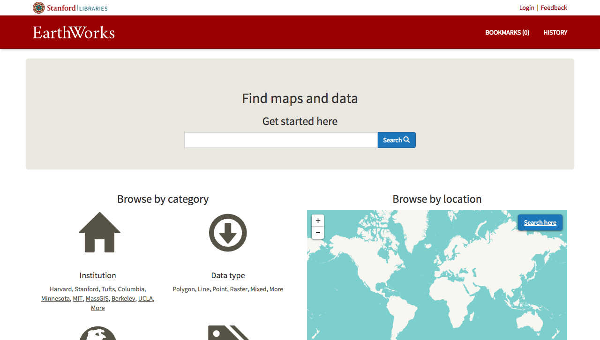

B1G Geoportal
Hello!
It's super nice to be here.
Warning!
My Background

UI · Reshelving · 1996-1998


U of I · BibApp · 2006-2010
BibApp
BibApp
- UW Online Bibliography
- Colophon
- Ruby on Rails
- Apache Solr

UW · Web Dev · 2006-2013

UW Forward

UW Forward
- UW System Library Catalog
- 9.5M+ Records
- MARC
- MODS
- Dublin Core
- Colophon
- Ruby on Rails
- Apache Solr
- Blacklight
- Bootstrap

UMN · Web Arch. & UX Analyst · 2013+

UMN Libraries
UMN Libraries
Web Development Dept.
- Cody Hanson - Manager
- Michael Berkowski
- Paul Bramscher
UMN Libraries
Web Development Dept.
- Hosting / Automation
- Performance Monitoring
- Penetration Testing
- Data Backups
- Disaster Recovery
B1G Geoportal
Development Path
- Solr (Search/Datastore)
- Ruby on Rails (Web Framework)
- Blacklight (Discovery Layer)
- Geoblacklight (Geo Discovery Layer)
- Local Customizations (CSS, JS, HTML, Ruby)
- B1G Geoportal
Solr > Blacklight

Solr > Blacklight

Solr > BL > GBL

Solr > BL > GBL
Solr > BL > GBL > B1G
Three Projects in One
Balance

Customizations
Simple - Look & Feel
Simple - Look & Feel
Design Goals
- Follow BTAA branding guidelines
- Reusable styles for site and blog
- Ease of maintainablity
Simple - Look & Feel - CSS

Simple - Look & Feel - Results

Moderate - Map Clusters
Moderate - Map Clusters

Moderate - Map Clusters
Design Goals
- Help the map "speak"
- Make the map visually engaging
- Allow the map to inform
- Collection strengths
- Highlight empty result areas
Moderate - Map Clusters
Implementation
- Add Leaflet Clustering Plugin (JS)
- Add Solr schema field (Solr)
- Initialize map with centroid data (JS)
Add Leaflet Clustering Plugin
Add Solr centroid schema field

Initialize map with centroid data
/app/assets/javascript/geoblacklight/modules/results.js
// instantiate new map with PruneCluster
geoblacklight = new GeoBlacklight.Viewer.Map(this, { bbox: bbox });
var pruneCluster = new PruneClusterForLeaflet();
// Oboe - Re-query Solr for JSON results
var urlStr = window.location.href + '&format=json&per_page=1000&rows=10000';
var urlStr = urlStr.replace(/page=[0-9]/,'');
oboe(urlStr)
.node('response.docs.*', function( doc ){
if(typeof doc.centroid_s != 'undefined'){
var latlng = doc.centroid_s.split(",")
var marker = new PruneCluster.Marker(latlng[0],latlng[1], {popup: "" + doc.dc_title_s + ""});
pruneCluster.RegisterMarker(marker);
}
}
)
.done(function(){
geoblacklight.map.addLayer(pruneCluster);
})
Moderate - Map Clusters
WAIT!
Moderate - Map Clusters
- Maintenance?
- Software tests?
- Geoblacklight upgrades?
Add some tests
def test_map_clustering
visit "/?q=water&search_field=all_fields&view=mapview"
assert page.has_selector?("div.prunecluster.leaflet-marker-icon", :wait => 10)
end
def test_map_clustering_result_paging
visit "/?page=2&q=water&search_field=all_fields&view=mapview"
assert page.has_selector?("div.prunecluster.leaflet-marker-icon", :wait => 10)
end
Moderate - Map Clusters
- Maintenance?
- Software tests?
- Geoblacklight upgrades?
Customizations

Customizations - Um...

Customizations - OMG NO

Community
B1G Geoportal Data Types
| Paper Map | 2,485 | 30% |
| Mixed | 1,985 | 24% |
| Polygon | 1,668 | 20% |
| Point | 1,377 | 16% |
| Line | 631 | 8% |
| Raster | 192 | 2% |
| Image | 56 | 1% |
Results > Paper Map

Results > Paper map
Uffda
Show page > Paper map

What are other people doing?
Stanford
NYU
VecNet
Princeton
Pulmap - GitHub
Pulmap - Eliot

thumbnail.rb
class Thumbnail
def initialize(document)
@document = document
end
##
# Get the thumbnail url from dctrefs if turned on in settings.
# If not in dctrefs, then get it from a service endpoint (WMS, IIIF, etc...).
# Return nil if both of those fail, so the thumbnail is not displayed.
# @return [String, nil] thumbnail url
def url
if thumbnail_solr_field?
thumbnail_solr_field
elsif Settings.THUMBNAIL.USE_DCT_REFS
thumbnail_reference || generated_thumbnail
elsif restricted_scanned_map?
thumbnail_reference
else
generated_thumbnail
end
end